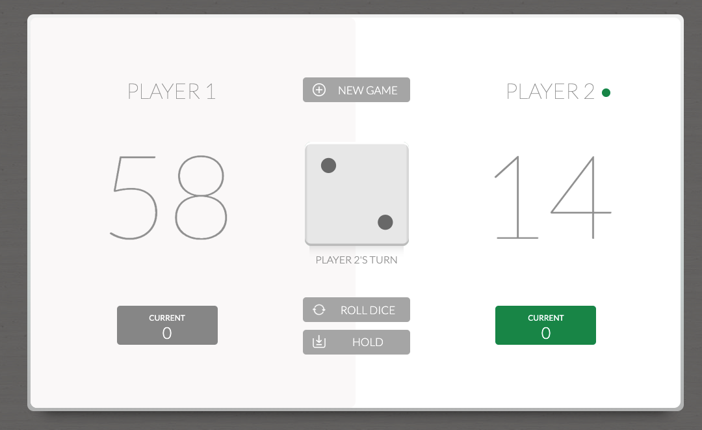
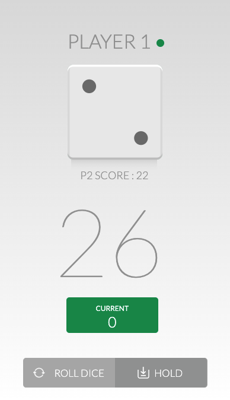

Reach 100 points and avoid the dice's face 1!
The desktop version offers a game interface with two players simultaneously. It is centered in the screen and it's compatible for tablets.
The mobile version offers one player at a time but with the particularity of seeing the opponent's score!
This game is a Javascript challenge as part of my STUDI training of "Web application development and of Python development".